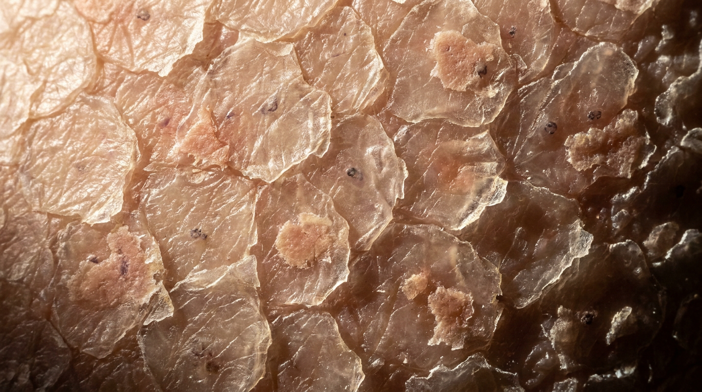
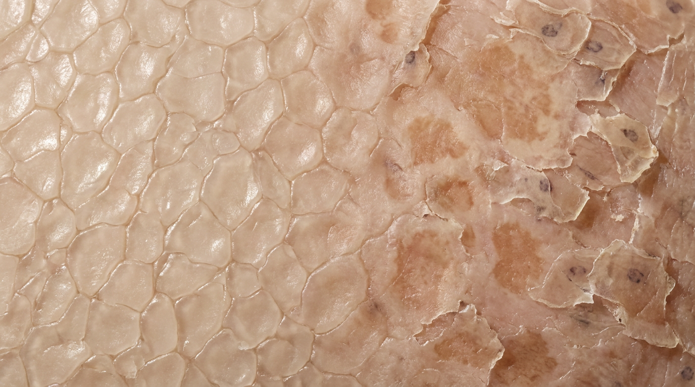
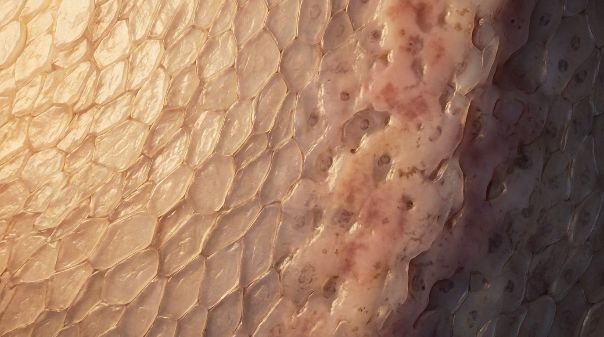
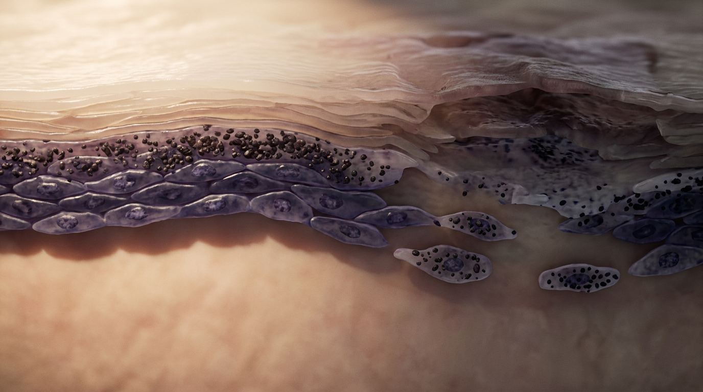
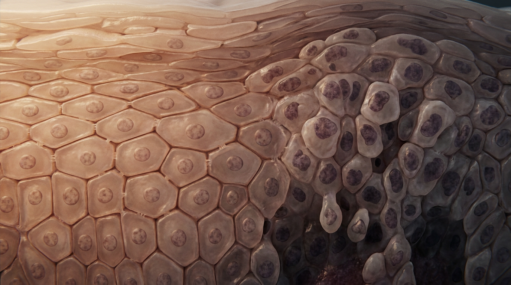
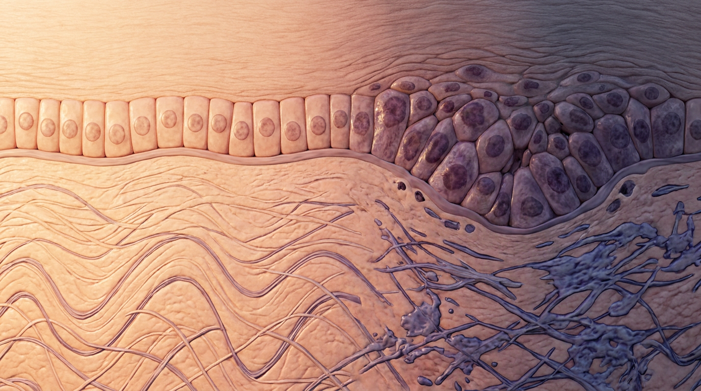
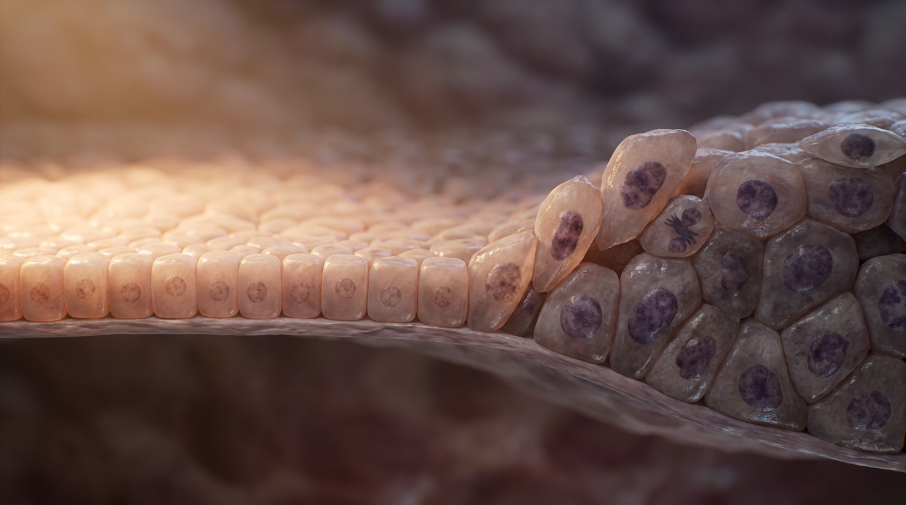
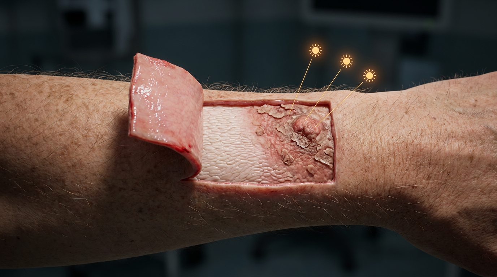

A Visual Atlas of Disease Mechanism
She noticed the patch on her forearm the way most people do. Not right away. It had been there for months before it earned a second look, rough under her thumb when she reached for a coffee cup, the kind of thing you rub instead of report.
The skin had been trying to say something for twenty years before she felt it. Every unprotected afternoon, every summer she didn't think twice about, had been logged somewhere she couldn't see. The patch was the ledger finally coming due.

Dr. Oppong took her arm and turned it toward the window light, the same gesture he used on every patient, the one that made people stop talking and start watching his face instead. He ran his thumb once across the patch. Rough. Not raised enough to worry her. Rough enough to worry him.
He didn't say cancer. He said "let's look closer," and reached for the loupe on the counter, the one with the scratched lens he'd never replaced because he liked knowing exactly where every mark on it came from.

Under magnification, the top layer of her skin told two stories at once. On one side, the cells lay in the tidy, stacked rows they were supposed to keep, flat and translucent, each one letting go of its nucleus on schedule like it was following a script written before she was born.
On the other side, the rows had broken formation. Cells piled unevenly, some holding onto pieces of themselves they should have shed, patchy and thickened where the light hit them wrong. Doctors call this parakeratosis. It means the skin forgot how to finish what it started.

Beneath the surface confusion, a second layer was already thinning out. This layer is supposed to be where the skin manufactures its final waterproofing, dense with dark granules that thicken as cells rise toward the surface, like a factory floor stacked with product ready to ship.
Under the healthy skin nearby, that factory was running fine. Under the rough patch, it had gone quiet in places, gaps opening where there should have been continuous coverage. Whatever was happening had started long before it reached her fingertips.

One layer deeper still, and the story stopped being about surface texture and started being about architecture. Healthy skin builds itself in a strict maturation line, cells born at the bottom and rising in order, each one bigger and flatter than the one below it, obedient the whole way up.
In the affected zone, that order had collapsed near the base. Cells crowded together instead of queuing up, their nuclei darker and larger than they should be, small clusters pushing upward out of turn. It looked less like growth and more like a room where everyone had started talking at once.

At the very bottom, past the layers she could feel with her thumb, sat the answer. The basal layer is where new skin cells are born, a single disciplined row sitting on the membrane that separates skin from the tissue beneath it. In healthy skin, those cells divide quietly and stay in line.
Here, they didn't. And just beneath them, in the dermis, the collagen had lost its clean woven structure, replaced by something thickened and disorganized. That damage had a name too. Doctors call it solar elastosis, the skin's version of a paper trail, proof that decades of sun had reached all the way down to the foundation.

A handful of cells in that basal row weren't staying where they belonged. They had grown larger, their nuclei swollen and irregular, and instead of dividing flat along the membrane the way they were built to, some were angling upward, pushing into the layer above them like they were trying to leave.
This is the part of the story that decides everything. As long as that upward push stays partial, stops short of climbing through every layer above it, the disease has a name that can still be watched and treated. If it ever climbs the whole way, the name changes to something far more serious. The distance those cells travel is the entire difference.

Dr. Oppong didn't need the full biopsy to know what he was looking at, but he took it anyway, lifting a small section of her forearm skin back like a page, the wound opening toward her wrist the way real tissue does, following the direction blood and nerve would actually travel.
Underneath, the cross-section confirmed what the surface had been hinting at for months. Normal skin on one edge, disordered skin on the other, the transition visible in one continuous cut. He closed the site, told her the word actinic keratosis, and told her what came next: freezing, watching, and no more unprotected afternoons.
She had felt the rough patch for months. It took eight layers of tissue, cut in cross-section under a light she'd never see with her own eyes, to show her what her skin had actually been trying to say.

Plates generated from the Immersa medical case-visuals sequence. Full pathophysiology reference: parakeratosis (stratum corneum), granular layer thinning (stratum granulosum), architectural crowding and dysplasia (stratum spinosum), basal layer dysplasia with upward vector (stratum basale), and solar elastosis (dermis). The complete vertical mechanism of actinic keratosis, surface symptom to cellular root.